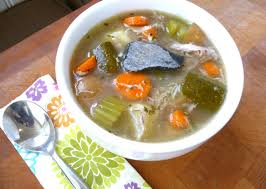

Microaved Cake

Stone soup is the name given to a wide variety of hearty meat and vegetable soups that stems from a European folktale about community sharing. And here it comes TRUE
You will need:
- 4 Cans (14-1/2 ounces each) Chicken Broth
- 4 Medium Red Potatoes, Cut Into Eighths
- 1 Yellow Summer Squash, Chopped
- 2 Medium Carrots, Chopped
- 1 Medium Onion, Chopped
- 2 Celery Ribs, Chopped
- 1 teaspoon Dried Thyme
- 1/2 Teaspoon Pepper
- 4 Cups Cubed Cooked Chicken
- 1 Cup Frozen Cut Green Beans
- 1/2 Cup Quick-Cooking Barley
- 1 Can (14-1/2 Ounces) Diced Tomatoes, Undreained
- 4 Cups Salad Croutons
- 1 Cup Shredded Parmesan Cheese
How to make:
- In a Dutch oven, combine the first 8 ingredients. Bring to a boil. Reduce heat; cover and simmer until vegetables are crisp-tender, 10-15 minutes.
- Stir in the chicken, beans and barley. Bring to a boil. Reduce heat; cover and simmer until vegetables and barley are tender, 10-12 minutes. Add tomatoes; heat through. Serve with croutons and cheese.